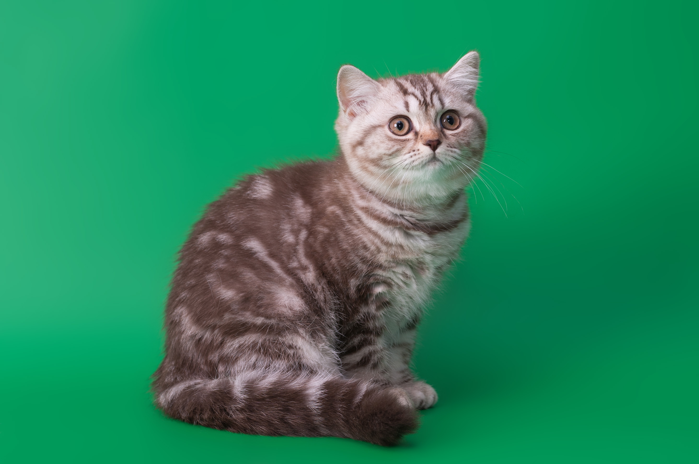
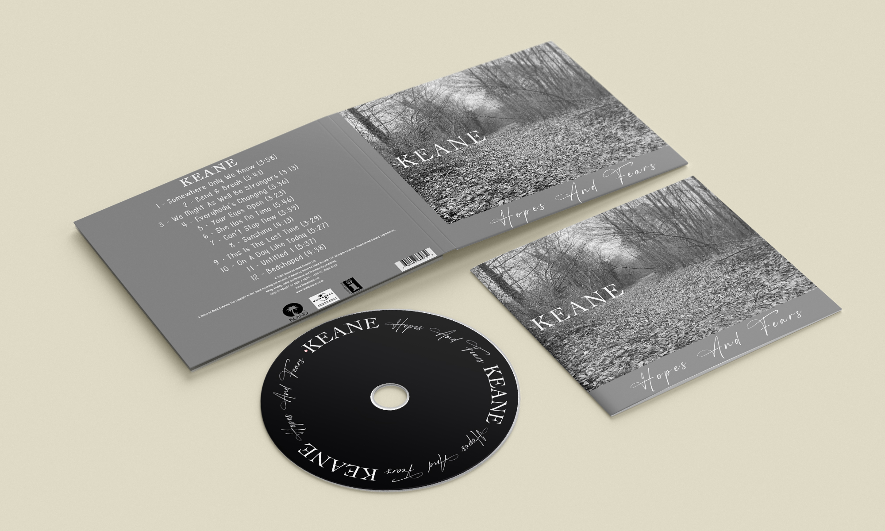
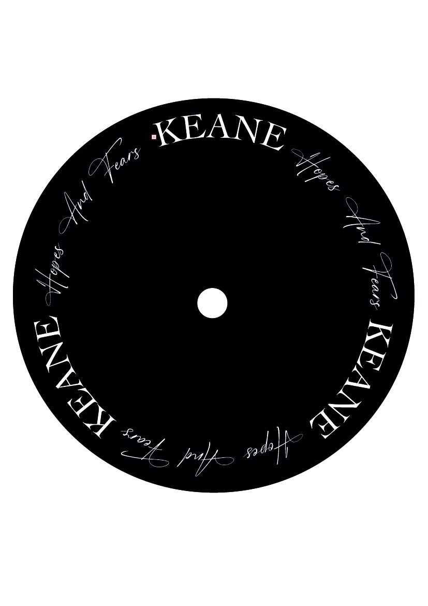
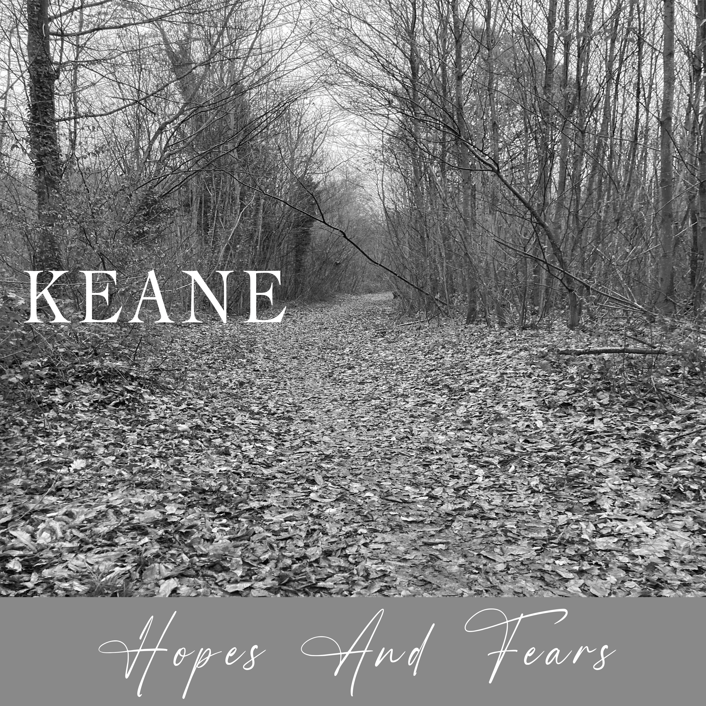
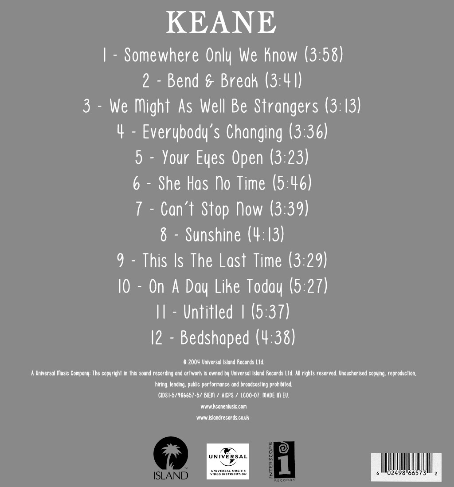
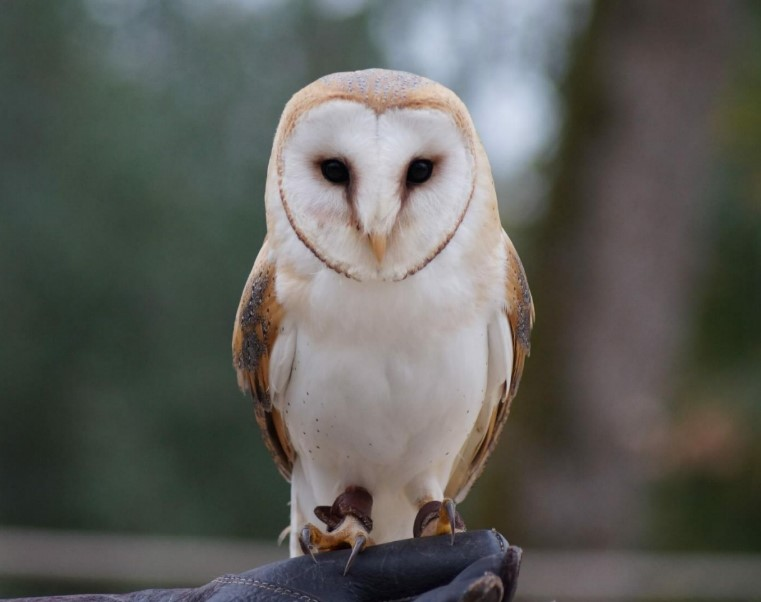

Graphisme
J'ai pu apprendre à utiliser plusieurs outils de graphisme pour créer des morceaux de médias pour informer, communiquer, promouvoir.
Design d'un téléphone futuriste
Réalisation du design d’un téléphone futuriste, choix de la stratégie publicitaire pour ce produit, puis intégration du téléphone dans un mock-up :

Le chat
Exercice où il fallait détourer ce chat puis l'incruster sur un fond de notre choix :


L'album
Exercice où il fallait proposer une refonte des graphismes d'un album déjà existant en utilisant des photos qu'on avait prises :




Animal totem
Exercice où il fallait détourer puis incruster une tête d'animal sur une photo de nous :
